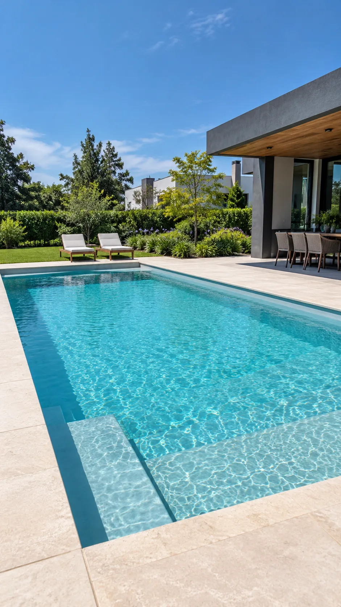

01
Construcción en hormigón
La estructura de cada piscina, trabajada en hormigón.
Construimos piscinas de hormigón y realizamos su terminación con pintura. Mirá lo que hacemos y hablemos de tu proyecto.
Atención de 8 a 16 hs
Una mirada de cerca a los espacios y detalles que definen nuestro trabajo.
Una piscina comienza en la construcción y cobra vida en la terminación.
La estructura de cada piscina, trabajada en hormigón.
El acabado pintado que completa la piscina.
El resultado: un espacio para disfrutar del agua.
Nos dedicamos a hacer piscinas de hormigón con terminación pintada. Desde la estructura hasta el acabado final, cada etapa está enfocada en el resultado que querés para tu espacio.
Contanos tu ideaEscribinos y contanos qué piscina tenés en mente.